# ------------------------- 1. ПОДГОТОВКА СРЕДЫ ---------------------------
# Загрузка необходимых пакетов
library(JABBA) # Основной пакет для оценки запасов
library(reshape2) # Для преобразования данных (функция dcast)
# Установка рабочей директории (папки, где будут храниться результаты)
setwd("C:/BAKANEV/JABBA")
# Создание папки для результатов анализа
assessment <- "NEW JABBA" # Название оценки
output.dir <- file.path(getwd(), assessment) # Создание пути к папке
dir.create(output.dir, showWarnings = FALSE) # Создание папки (если не существует)
setwd(output.dir) # Переход в созданную папку
# ------------------------- 2. ЗАГРУЗКА И ПОДГОТОВКА ДАННЫХ ---------------------------
# Создание вектора лет анализа
Year <- 2005:2024 # Последовательность лет от 2005 до 2024
# Вектор данных об уловах (catch)
Catch <- c(5,7,6,10,14,25,28,30,32,35,25,20,15,12,10,12,10,13,11,12)
# Вектор данных индекса обилия CPUE (catch per unit effort)
CPUE <- c(27.4,26.8,16.8,23.0,29.0,30.0,16.5,17.2,10.5,14.6,8.3,11.4,15.5,13.8,11.5,15.3,12.2,15.6,16.2,13.4)
# Вектор данных индекса обилия BESS
BESS <- c(NA,16.3,20.7,15.1,18.6,16.0,13.8,13.3,11.7,11.8,9.3,7.1,8.0,9.2,10.3,9.8,10.3,11.7,13.7,13.4)
# Форматирование данных в таблицы для JABBA
catch_data <- data.frame(year = Year, catch = Catch) # Таблица уловов
cpue_data <- data.frame(year = Year, CPUE = CPUE, BESS = BESS) # Таблица индексов
# Расчет стандартных ошибок (SE) для индексов
# Используем коэффициент вариации (CV) = 20% (0.2)
se_data <- data.frame(
year = Year,
CPUE = ifelse(is.na(CPUE), NA, 0.2),
BESS = ifelse(is.na(BESS), NA, 0.2))7 Продукционная модель JABBA
7.1 Введение
Начнём с ловушки. Когда у нас в руках есть “игрушечный руль” — что‑нибудь вроде dB/dt = r·B·(1 − B/K) − C(t) — страшно хочется почувствовать рычаг управления: подберём r и K, оценим текущую B, поставим правильный Ct+1 и поведём систему по траектории к MSY. Иллюзия контроля рождается там, где математика выглядит законченной, а данные — нет. В промысловой реальности индексы обилия шумны, выборка смещена, «уловистость» q дрейфует, а режимы среды меняются быстрее, чем сходятся наши апостериорные распределения. Модель даёт ощущение руля, но часть океана — это шторм, который рулит нами. Даниэль Канеман сказал бы, что в такие моменты «Система 1» радостно дорисовывает уверенность, а «Система 2» обязана включить тормоза и проверить допущения, чувствительность и ретроспективную устойчивость. Биологические системы редко ведут себя «по учебнику», и именно поэтому дисциплина проверки важнее изящества формулы.
В этом занятии мы работаем с JABBA — байесовской стохастической продукционной моделью, близкой по философии к SPiCT. Оба инструмента из одной семьи: они ставят биологическую динамику в основу, честно разделяют ошибки наблюдения и процесса, и главное — выводят всю неопределённость в явный вид. Мы будем строить оценку из уловов и пары индексов (CPUE и BESS), задавать слабые прайеры, запускать MCMC, и не верить числам до тех пор, пока не проверим сходимость, остатки, ретроспективу (Mohn’s ρ) и предсказательную способность на «срезах» (MASE). Однако не будем впадать в цинизм: рациональность, систематический сбор данных и прозрачные модели — это всё ещё лучший путь к более разумным решениям; просто оптимизм должен быть «проверенным на бордюре» ошибок и интервалов.
Зачем именно JABBA в курсе. Во‑первых, реплицируемость: код, входные таблицы, фиксированная директория результатов — вы сможете восстановить каждый шаг и проверить каждое предположение. Во‑вторых, явная работа с неопределённостью: априорные распределения параметров r, K, ψ и q, апостериоры параметров и траекторий, доверительные интервалы для B/BMSY и F/FMSY, вероятностные выводы, а не одинокие точечные «оценки». В‑третьих, диагностика «по умолчанию»: от Geweke/Heidel до фазовых графиков Кобэ, от остатков до process deviations. В‑четвёртых, прогноз — не как гадание, а как веер сценариев с аккуратным учётом параметрической и процессной вариабельности. Хорошая модель — это карта, удобная для навигации, а не фотография местности. Мы будем постоянно помнить, что наши карты полезны ровно настолько, насколько мы отслеживаем их масштаб, погрешность и зоны плохой видимости.
С методологической стороны всё просто и сложно одновременно. Просто — потому что базовая биология логистична: при малой биомассе прирост почти пропорционален B, близко к K — прирост затухает; вылов вычитает «сверху». Сложно — потому что r и K плохо идентифицируются без информативных периодов (высоких B или резких спадов), q плавает между флотами и годами, а процессная ошибка σ² смешивается с наблюдательной τ². Байесовский подход помогает не только «усреднить» неопределённость, но и сделать её объектом управления: мы можем принимать решения, которые устойчивы к диапазону правдоподобных миров, а не к одному единственному. Мы не ищем «замысел» в данных, мы подбираем механизм, который лучше других воспроизводит наблюдаемую адаптивную динамику, и признаём эволюционную торгуемость параметров — их компромисс между точностью и устойчивостью.
Управление запасами — это всегда история, которую общество рассказывает себе о будущем: «мы извлечём столько‑то, и запас останется устойчивым». Математическая часть истории — необходима, но недостаточна; у неё есть герои (B/BMSY и F/FMSY), есть антагонисты (перелов, неучтённый вылов, сдвиги среды), и есть мораль: если вы не тестируете собственный нарратив ретроспективой и внешней валидацией, он превращается в миф. Поэтому в этом практикуме мы делаем упор на три вещи. Во‑первых, читаем таблицы параметров сквозь призму сходимости: PPMR и PPVR для многомерной стабильности, Geweke/Heidel для цепей. Во‑вторых, различаем «точность» и «калибровку»: модель может хорошо ранжировать годы (низкий MASE), но давать завышенную амплитуду (остатки и process deviations подскажут, где именно). В‑третьих, смотрим на устойчивость решений: Mohn’s ρ близок к нулю — хорошо; «веер» ретроспективы не расползается — ещё лучше; прогноз под реалистичными сценариями не пересекает опасные квадранты Кобэ — то, что нужно для рекомендаций.
Важное предупреждение про иллюзию контроля. JABBA и SPiCT не волшебные палочки, а инструменты, которые позволяют количественно выразить вашу неопределённость. Если прайеры на r чрезмерно широки, индексы плохо калиброваны по q, а периоды высокой биомассы отсутствуют, «красивые» графики всё равно останутся красивыми — но управленческая уверенность будет мнимой. Здесь полезна привычка думать об “антикхрупкости”: формулируйте решения, которые переживут «плохие» годы без катастрофы — например, коридоры вылова, адаптивные пороги, ежегодную перекалибровку модели с новыми данными, стресс‑тесты при r на нижней границе ДИ. И полезна доля оптимизма: последовательное накопление данных (хороших, прозрачных, воспроизводимых) сделает модель лучше — и это не вера, а эмпирический факт в дисциплинах, где стандарты учёта повышались.
Наконец, почему мы показываем на одном материале JABBA и проводим параллели со SPiCT. Потому что полезно видеть одну и ту же задачу через родственные, но не идентичные инструменты: отличия в реализации процессной ошибки, спецификации наблюдательных дисперсий, в настроечных «рычагах» MCMC и диагностике. Консенсус между инструментами — это не гарантия истины, но хорошая проверка на то, что вы не «подогрели» результат особенностями одной конкретной реализации. Если же инструменты расходятся — это повод вернуться к данным: к шкалам, пропускам, структурным разрывам, к возможной нестационарности q и к тем самым чёрным лебедям, которые любят объявляться в самый неудобный момент.
С этим набором интеллектуальной «защиты от иллюзий» мы и идём дальше: загрузим уловы и индексы, зададим прайеры, соберём модель, проверим, как она дышит на диагностике, посмотрим ретроспективу и только после этого — аккуратно поговорим про прогнозы. Не потому, что модели плохи, а потому что океан велик, а мы — скромны и внимательны. Именно так появляются решения, которые приносят пользу в реальном управлении, а не только на красивых слайдах.
И так, библиотека JABBA https://github.com/jabbamodel/JABBA - оценка запаса с помощью стохастической версии продукционной модели и байесовского подхода. JABBA и SPiCT – наиболее распространенные в международной практике инструменты, реализующие продукционный подход к оценке запасов гидробионтов при нехватки данных.
Помимо R JABBA требует дополнительно установки JAGS. Для демонстрации основных функций пакета в настоящем скрипте используются входные данные из примера SPiCT, поэтому в скрипте демонстрации модели JABBA сценарий моделирования назван “SPiCT_adapted”.
Скрипт этого практического занятия можно скачать по ссылке.
7.2 Подготовка среды и загрузка данных
В данном разделе выполняется базовая настройка среды R для работы с пакетом JABBA. Инициируется загрузка двух необходимых пакетов: JABBA (основной инструмент оценки запасов) и reshape2 (для преобразования структур данных). Создается целевая директория “NEW JABBA” для автоматического сохранения всех результатов анализа, после чего рабочая среда переключается на эту папку.
Формируются три обязательных компонента входных данных:
Данные по вылову (catch): Годовые значения уловов за 20-летний период (2005-2024 гг.), представленные в виде вектора из 20 числовых значений.
Два индекса обилия:
CPUE (улов на единицу усилия): 20 наблюдений
BESS (альтернативный индекс, например, данные съемок): 19 наблюдений (первое значение отсутствует, обозначено как NA)
- Стандартные ошибки (SE) для индексов: Для упрощения примера задаются фиксированным коэффициентом вариации (CV=20%). Это означает, что для каждого ненулевого значения индекса SE рассчитывается как 20% от его величины. Пропуски в индексах (NA) автоматически сохраняются как NA в таблице SE.
Все данные структурируются в три таблицы с единой временной осью (2005-2024 гг.): отдельно для уловов, значений индексов и их стандартных ошибок. Эта подготовка обеспечивает корректный формат входных данных, необходимых для последующего построения продукционной модели в JABBA.
7.3 Настройка и запуск модели JABBA
В этом разделе выполняется конфигурация и запуск JABBA. Сначала с помощью функции build_jabba формируется структура входных данных для модели, куда передаются подготовленные таблицы уловов, индексов CPUE/BESS и их стандартных ошибок. Указывается название оценки (“NEW JABBA”) и сценарий моделирования (“SPiCT_adapted”). В качестве биологической основы выбрана модель Шефера (логистический рост). Настраиваются ключевые априорные распределения: для темпа роста популяции (r) задано нормальное распределение N(0.2±0.5), для емкости среды (K) - логнормальное LN(189.6±0.795), для начальной заполненности запаса (ψ) - бета-распределение Beta(0.75±0.25). Установлена оценка процессной ошибки (sigma.est=TRUE) и слабоинформативные априоры для дисперсии наблюдений.
Непосредственный запуск Байесовской оценки выполняется функцией fit_jabba, которая использует MCMC-алгоритм. Конфигурация MCMC включает 50,000 итераций с отбрасыванием первых 10,000 (фаза “burn-in”), прореживанием цепей в 5 раз и запуском 2 независимых цепей для проверки сходимости. Результатом работы является объект fit, содержащий апостериорные распределения параметров, оценки биомассы и диагностику модели, которые будут использоваться для последующего анализа состояния запаса.
# ------------------- 3. НАСТРОЙКА И ЗАПУСК МОДЕЛИ JABBA --------------------
# Создание входных данных для модели
jbinput <- build_jabba(
catch = catch_data,# Данные об уловах
cpue = cpue_data,# Данные индексов обилия
se = se_data,# Стандартные ошибки
assessment = assessment, # Название оценки
scenario = "SPiCT_adapted", # Сценарий модели
model.type = "Schaefer", # Тип модели (Шефера)
sigma.est = TRUE, # Оценивать изменчивость процесса?
r.prior = c(0.2, 0.5),# Априорное распределение для r (среднее, SD)
K.prior = c(189.6, 0.795),# Априорное для K (среднее, SD)
psi.prior = c(0.75, 0.25),# Априорное для начального заполнения
igamma = c(0.001, 0.001), # Параметры для дисперсии наблюдений
verbose = FALSE # Отключить подробный вывод
)
# Запуск Байесовской модели (MCMC)
fit <- fit_jabba(
jbinput,# Входные данные
ni = 50000, # Общее количество итераций
nb = 10000, # Количество "выжигаемых" итераций (burn-in)
nt = 5,# Частота прореживания (thinning)
nc = 2 # Количество цепей MCMC
)7.4 Анализ параметров модели JABBA (fit$pars)
Команда fit$pars выведет таблицу, содержит медианные значения, 95% доверительные интервалы и результаты тестов сходимости MCMC для ключевых характеристик модели.
> fit$pars
Median LCI UCI Geweke.p Heidel.p
K 257.137636616 178.4613660245 442.25933810 0.533 0.401
r 0.268924223 0.1517493450 0.42756749 0.324 0.864
q.1 0.102043488 0.0565010978 0.15490243 0.920 0.967
q.2 0.078076035 0.0433099875 0.11858679 0.986 0.954
psi 0.875023951 0.5909908905 1.23643434 0.970 0.470
sigma2 0.003477230 0.0005645686 0.02110338 0.369 0.563
tau2.1 0.006817871 0.0006978604 0.05031429 0.845 0.392
tau2.2 0.002775946 0.0004835058 0.01978467 0.522 0.445
m 2.000000000 2.0000000000 2.00000000 NaN NA
>Биологические параметры:
- K(емкость среды): Медиана 257.14 единиц биомассы, например тыс.тонн (95% ДИ: 178.46–442.26). Широкий доверительный интервал отражает типичную неопределенность при отсутствии данных о периоде, когда запас приближался к нетронутому состоянию.
- r(темп роста): Медиана 0.269 год⁻¹ (95% ДИ: 0.152–0.428) соответствует биологическим ожиданиям для многих промысловых видов рыб.
- ψ(начальная биомасса): Медиана 0.875 (95% ДИ: 0.591–1.236) указывает, что в 2005 году биомасса составляла ~87.5% от K.
Параметры наблюдений:
q.1(коэффициент уловистости (улавливаемости) CPUE): Медиана 0.102 (95% ДИ: 0.056–0.155)
q.2(коэффициент уловистости (улавливаемости) BESS): Медиана 0.078 (95% ДИ: 0.043–0.119) Широкие доверительные интервалы (>50% от медианы) подтверждают недостаточную информативность данных для точной оценки этих параметров.
Оценки ошибок:
| Параметр | Медиана | 95% ДИ | Назначение | |||||
| sigma2 | 0.0035 | [0.0006, 0.021] | Дисперсия ошибки процесса | |||||
| tau2.1 | 0.0068 | [0.0007, 0.050] | Дисперсия ошибки CPUE | |||||
| tau2.2 | 0.0028 | [0.0005, 0.020] | Дисперсия ошибки BESS | |||||
| Соотношение σ²/τ² показывает: | Для CPUE: 0.0035/0.0068 ≈ 0.51 | Для BESS: 0.0035/0.0028 ≈ 1.25 |
Это свидетельствует, что неопределенность в большей степени обусловлена погрешностью данных, чем стохастичностью биологической динамики.
Диагностика сходимости MCMC: Все p-значения тестов (Geweke, Heidel) превышают 0.05, что подтверждает сходимость цепей:
Управленческие выводы:
1.Из-за неопределенности в оценках K и q интерпретацию следует фокусировать на относительных показателях (B/Bmsy, F/Fmsy).
2.Для повышения точности модели требуется:
Дополнительные данные за периоды высокой биомассы (для уточнения K)
Калибровка индексов обилия (для снижения τ²)
3.Высокие значения τ² указывают на необходимость улучшения качества данных CPUE и BESS.
Диагностика и визуализация результатов
После выполнения байесовской оценки в JABBA проводится комплексная диагностика и визуализация результатов. Автоматически генерируется набор стандартных графиков через функцию jabba_plots, которые сохраняются в рабочую директорию. Для углубленного анализа последовательно строятся специализированные графики: динамика уловов с модельными значениями, согласованность наблюдаемых и предсказанных индексов CPUE/BESS, сравнение априорных и апостериорных распределений ключевых параметров (r, K, q), а также диагностика остатков модели. Особое внимание уделяется сходимости MCMC-цепей для исключения вычислительных ошибок.
Важнейшая часть анализа - визуализация временных трендов: абсолютной биомассы (B), промысловой смертности (F) и их соотношений с целевыми уровнями (B/Bmsy, F/Fmsy). Фазовый портрет и Кобэ-график интегрируют эти показатели, наглядно отображая историческую и текущую позицию запаса относительно ориентиров управления (перелов/недолов). Дополнительно выполняются тест на случайность остатков, логарифмические аппроксимации и анализ отклонений процесса, что обеспечивает всестороннюю проверку адекватности модели. Финал этапа - экспорт рассчитанных временных рядов (биомасса, F, B/Bmsy и др.) в CSV-файл для дальнейшего использования.
# ------------------- 4. ДИАГНОСТИКА И ВИЗУАЛИЗАЦИЯ РЕЗУЛЬТАТОВ --------------------
# Генерация стандартных диагностических графиков
jbplot_ensemble(fit)
jabba_plots(fit, output.dir = output.dir)
# Индивидуальные графики для детального анализа:
jbplot_catch(fit)# График уловов
jbplot_cpuefits(fit)# Сравнение модельных и наблюдаемых индексов
jbplot_ppdist(fit)# Распределения априорных и апостериорных параметров
jbplot_residuals(fit)# Остатки модели
jbplot_mcmc(fit)# Диагностика сходимости MCMC
jbplot_trj(fit, type = "B")# Динамика биомассы
jbplot_trj(fit, type = "F")# Динамика промысловой смертности
jbplot_trj(fit, type = "BBmsy")# Отношение *B/B~msy~*
jbplot_trj(fit, type = "FFmsy")# Отношение *F/F~msy~*
jbplot_spphase(fit)# **График продуктивности запаса с разметкой фаз Kobe**
jbplot_kobe(fit)# Кобэ-график (*B/B~msy~* vs *F/F~msy~*)
# Дополнительные диагностики:
jbplot_runstest(fit)# Тест на случайность остатков
jbplot_logfits(fit)# Графики в логарифмической шкале
jbplot_procdev(fit)# Отклонения процесса
# Сохранение временных рядов результатов
write.csv(fit$timeseries, file = "results.csv", row.names = FALSE)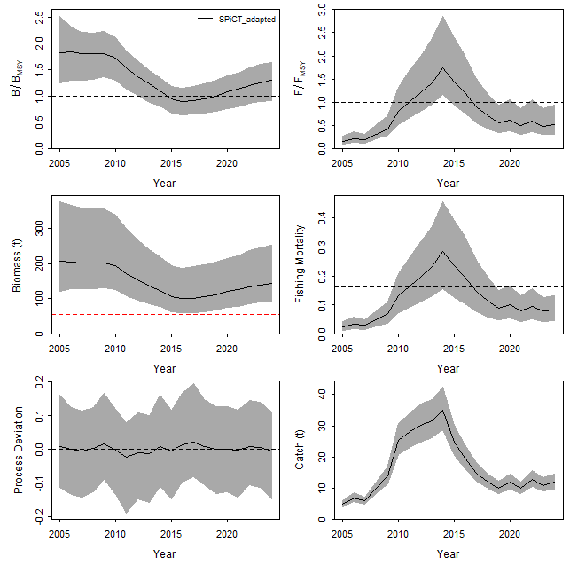
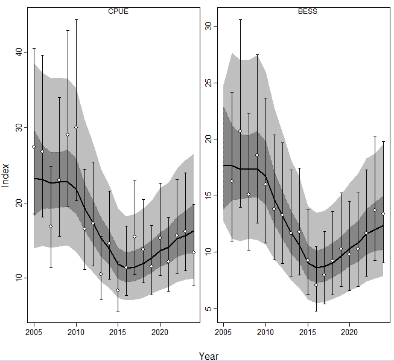
График сравнения позволяет визуально оценить адекватность модели реальным данным и выявить систематические расхождения. Он отображает: 1.Наблюдаемые значенияиндексов (например, CPUE и BESS) в виде точек с вертикальными отрезками, отражающими доверительные интервалы на основе стандартных ошибок. 2.Модельные предсказания в виде сплошной линии с затененной областью (50 и 95% доверительные интервалы апостериорного распределения).
Ключевые аспекты интерпретации:
Согласованность: Если модельная кривая проходит в пределах доверительных интервалов наблюдаемых точек, это свидетельствует о хорошем описании трендов. Смещения: Систематическое занижение/завышение предсказаний для определенных периодов указывает на недостатки модели (например, недоучет факторов среды или нелегального вылова). Чувствительность индексов: Различия в точности аппроксимации CPUE и BESS помогают оценить, какой индекс информативнее отражает динамику биомассы. Аномалии: Резкие выбросы точек за пределы доверительной зоны модели сигнализируют о годах с нетипичными условиями (ошибки данных, природные катаклизмы). Практическое значение: График отвечает на вопрос — способна ли выбранная продукционная модель (в данном случае Шефера) достоверно воспроизводить историческую динамику запаса, что является основой для корректных прогнозов.
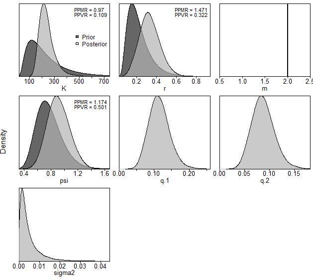
Этот график предоставляет инструмент для анализа влияния данных на исходные предположения модели. Он визуализирует:
1.Априорные распределения(темные области): - Заданные до анализа (например:r ~ N(0.2, 0.5),K ~ LN(189.6, 0.795)). - Отражают экспертные гипотезы или литературные данные о параметрах.
2.Апостериорные распределения(светлые области): - Рассчитанные в ходе Байесовского вывода (MCMC) после учета данных (уловы, индексы). - Показывают,как фактическая информация модифицировала первоначальные предположения.
Аспекты интерпретации:
Сдвиг пиков: Если апостериор смещен относительно априора (напр., пик для r сдвинулся от 0.2 к 0.3) – данные “перевесили” априорную гипотезу. Сужение кривой: Резкое сокращение дисперсии апостериора (напр., для K) свидетельствует о высокой информативности данных по этому параметру. Конфликт: Если апостериорный пик находится в “хвосте” априора (напр., априор для q задан N(1,0.2), а апостериор с пиком при 2.5) – сигнал о несоответствии данных или модели.
Параметры-индикаторы:
- r (темп роста): Четкий апостериор указывает на надежную оценку продуктивности запаса.
- K (емкость среды): Узкий апостериор – уверенность в оценке исторической биомассы.
- ψ (начальная заполненность): Расхождение с априором может указывать на ошибку в задании начальных условий.
Диагностическое значение:
Если апостериоры близки к априорам – данные не внесли новую информацию (требует пересмотра индексов). Если апостериоры асимметричны/многомодальны – возможны проблемы идентификации параметров (необходимы дополнительные диагностики).
Вывод: График отвечает на вопрос – насколько исходные биологические гипотезы подтвердились реальными данными, что критично для обоснованности оценки.
Касательно графиков коэффициентов пропорциональности или улавливаемости q. Здесь, для простоты примера, вручную не задаются. JABBA по умолчанию (автоматически) назначает слабый или малоинформативный априор: q ~ LogNormal(mean = 1, SD = 1000) Это практически равномерное распределение в широком диапазоне (от ~0 до +∞). Поэтому на графиках не видны темные области априорных распределений q1 и q2. Физический смысл: Мы не знаем, во сколько раз индекс отличается от абсолютной биомассы.
PPMR и PPVR: диагностические показатели в JABBA
В байесовском анализе, который лежит в основе работы JABBA, ключевым этапом является проверка сходимости MCMC-цепей. Именно для этой цели используются диагностические показатели PPMR (Potential Scale Reduction Factor for Multivariate Monitoring) и PPVR (Potential Scale Reduction Factor for Predictive Variance). Эти статистики позволяют оценить, насколько надежны полученные оценки параметров модели. PPMR представляет собой многомерный аналог классического R-hat критерия и оценивает сходимость сразу для всех параметров модели, учитывая их взаимосвязи. Он рассчитывается как корень из отношения дисперсии между цепями к дисперсии внутри цепей. Идеальное значение PPMR должно быть близко к 1, а значения выше 1.1 указывают на серьезные проблемы со сходимостью. PPVR же фокусируется конкретно на сходимости дисперсии апостериорных предсказаний, что особенно важно для оценки надежности доверительных интервалов прогнозируемых величин, таких как B/Bmsy или F/Fmsy. Значения PPVR также должны стремиться к 1.
В вашем конкретном случае анализ этих показателей дает неоднозначную картину. Для параметра K (несущая способность) мы видим практически идеальную сходимость: PPMR равен 0.97, что даже немного меньше 1, что указывает на превосходную стабильность оценок между цепями, а крайне низкое значение PPVR (0.109) говорит о высокой согласованности в оценке неопределенности. Это позволяет с уверенностью доверять полученным значениям K. Однако ситуация с параметром r (темп роста популяции) вызывает серьезные опасения. Значение PPMR 1.471 существенно превышает критический порог, что свидетельствует о явных проблемах со сходимостью цепей. Хотя PPVR 0.322 выглядит лучше, это не компенсирует высокий PPMR. Такая ситуация часто возникает при слишком широких априорных распределениях или недостатке информативных данных, особенно в периоды роста популяции. Для параметра ψ (начальная заполненность запаса) ситуация промежуточная: PPMR 1.174 находится на границе допустимого, а PPVR 0.501 указывает на умеренную согласованность в оценке неопределенности.
Для улучшения сходимости рекомендуется предпринять несколько шагов. Во-первых, стоит значительно увеличить количество итераций MCMC - например, до 100000 для ni и 20000 для фазы “burn-in” (nb). Во-вторых, необходимо пересмотреть априорные распределения, особенно для параметра r: возможно, стоит уменьшить стандартное отклонение с 0.5 до 0.2-0.3, если есть экспертные основания для такого ужесточения. В-третьих, стоит проверить качество входных данных - достаточно ли репрезентативны имеющиеся индексы обилия, особенно в ключевые периоды динамики популяции. Важно понимать, что при сохраняющихся проблемах со сходимостью абсолютные оценки биомассы и темпа роста могут оставаться ненадежными, однако относительные показатели, такие как B/Bmsy, часто оказываются более устойчивыми к подобным проблемам. Это связано с тем, что они в меньшей степени зависят от абсолютных значений проблемных параметров. Таким образом, несмотря на выявленные сложности, модель может оставаться полезной для принятия управленческих решений, особенно если фокусироваться на относительных показателях состояния запаса.
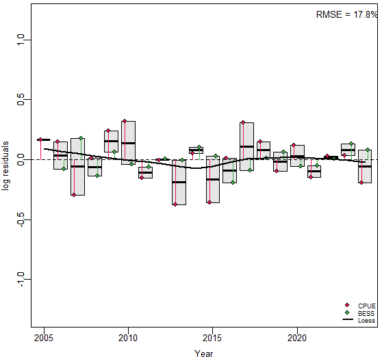
График остатков в JABBA (jbplot_residuals) представляет собой важный диагностический инструмент, позволяющий оценить качество соответствия модели реальным данным. На этом графике отображаются остатки - разницы между наблюдаемыми значениями индексов обилия (CPUE и BESS) и их модельными оценками. В вашем случае график строится на основе конкретных значений остатков, где для CPUE они варьируются от -0.38 до +0.31, а для BESS - от -0.20 до +0.17, с отсутствующим значением (NA) для BESS в 2005 году.
График имеет несколько ключевых элементов. Во-первых, это боксплоты, которые визуализируют распределение остатков для каждого индекса в целом, показывая медиану, квартили и возможные выбросы. Во-вторых, на график накладывается сглаженная линия (loess), которая помогает выявить систематические тренды в остатках. Например, если остатки демонстрируют явную тенденцию к увеличению или уменьшению со временем, это может указывать на неучтенные факторы в модели. В ваших данных остатки CPUE показывают некоторую изменчивость, но без явного тренда, в то время как BESS имеет более стабильные остатки с меньшим разбросом.
Интерпретация остатков имеет решающее значение. В идеале остатки должны быть случайно распределены вокруг нуля без видимых закономерностей. Наличие кластеров положительных или отрицательных остатков в определенные периоды может указывать на систематические ошибки модели. В нашем случае отсутствие явных трендов на графике - хороший знак, хотя отдельные выбросы, такие как отрицательный остаток CPUE в 2013 году (-0.38), заслуживают внимания. Размеры остатков также важны: значения, превышающие по модулю 0.5, считаются значительными и могут указывать на проблемы с данными или спецификацией модели.
График остатков особенно полезен для сравнения разных индексов. В нашем анализе видно, что остатки CPUE имеют больший разброс по сравнению с BESS, что может говорить либо о более высокой вариабельности данных CPUE, либо о том, что модель хуже описывает эту компоненту. Отсутствие данных BESS для 2005 года (NA) корректно обрабатывается графиком. Важно отметить, что систематические смещения остатков вверх или вниз могут указывать на проблемы с калибровкой коэффициентов уловистости (q), что согласуется с ранее выявленными сложностями в их оценке.
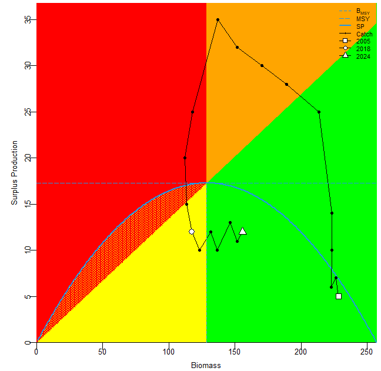
График представляет собой комплексную визуализацию, объединяющую три ключевых аспекта анализа продукционной модели: 1) продукционную функцию (дуга), 2) динамику вылова относительно биомассы и 3) фазовые переходы состояния запаса в координатах Кобэ-графика
На графике по оси X отображается биомасса (в абсолютных единицах или относительно Bmsy), а по оси Y — вылов и чистая продукция (surplus production). Кривая производственной функции (обычно параболическая для модели Шефера) показывает зависимость между биомассой и устойчивым выловом. Точки на графике представляют фактические годовые значения биомассы и вылова, соединенные линиями в хронологическом порядке. Цвет точек кодирует фазовое состояние запаса согласно классификации Kobe: зеленый — устойчивое состояние (B/Bmsy, F/Fmsy), желтый/оранжевый — перелов (B/Bmsy, F/Fmsy или B/Bmsy, F/Fmsy), красный — коллапс (B/Bmsy, F/Fmsy).
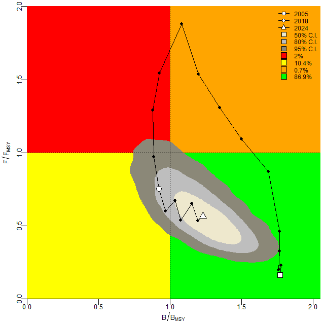
График Кобэ, генерируемый функцией jbplot_kobe(fit), представляет собой фазовый портрет, где по оси X отложено отношение биомассы к целевому уровню (B/Bmsy), а по оси Y — отношение промысловой смертности к устойчивому уровню (F/Fmsy). Этот график разделен на четыре квадранта, определяющих статус запаса. Зеленый квадрант (B/Bmsy > 1, F/Fmsy < 1) соответствует устойчивому состоянию без перелова. Желтый квадрант (B/Bmsy > 1, F/Fmsy > 1) сигнализирует о риске перелова. Оранжевый квадрант (B/Bmsy < 1, F/Fmsy > 1) указывает на активный перелов, а желтый (B/Bmsy < 1, F/Fmsy < 1) — на фазу восстановления запаса.
В нашем анализе целевые ориентиры рассчитаны на основе параметров модели: Bmsy = K/2 = 257.14/2 ≈ 128.57, а MSY = r×K/4 ≈ 0.269×257.14/4 ≈ 17.29. На графике отображена траектория запаса с 2005 по 2024 годы, где каждая точка соответствует медианным оценкам за год, а соединяющие их линии показывают хронологическую динамику. В 2005 году запас находился в идеальном состоянии: B/Bmsy = 1.83 (95% ДИ: 1.25–2.52), F/Fmsy = 0.15 (0.09–0.26), что помещает его глубоко в зеленый квадрант.
Период 2010-2015 годов демонстрирует критическое ухудшение состояния: к 2013 году B/Bmsy снижается до 0.89 (0.64–1.15), а F/Fmsy достигает пика 1.74 (1.16–2.86) в 2011 году, что соответствует оранжевому квадранту активного перелова. Это совпадает с историческими данными о максимальных уловах (28-35 единиц в 2009-2013 гг.), превышающих расчетный MSY (17.29). Последующий период (2016-2024) показывает восстановление: к 2024 году B/Bmsy возрастает до 1.29 (0.90–1.64), а F/Fmsy снижается до 0.51 (0.31–0.93), возвращая запас в зеленый квадрант.
Текущее положение (2024 год) указывает на восстановление запаса, однако горизонтально вытянутое облако неопределенности для B/Bmsy отражает чувствительность к оценке параметра K, чей широкий доверительный интервал (178–442) обусловлен исторической нехваткой данных о периоде высокой биомассы. Вертикальная компактность F/Fmsy подтверждает относительно точную оценку промысловой смертности. Управленческая рекомендация основывается на медианных значениях: поддержание F/Fmsy на уровне ≈0.5 позволит сохранить запас в устойчивом состоянии. Однако из-за неопределенности в оценке B/Bmsy (риск попадания в желтый квадрант при нижней границе ДИ 0.90) необходим ежегодный мониторинг с обновлением модели по новым данным. Исторический пример перелова 2011-2013 годов демонстрирует последствия превышения F/Fmsy >1.5, что должно учитываться при установке лимитов вылова.
7.4.1 Дополнительные диагностики
# Дополнительные диагностики:
jbplot_runstest(fit) # Тест на случайность остатков
jbplot_logfits(fit) # Графики в логарифмической шкале
jbplot_procdev(fit) # Отклонения процесса
# Сохранение временных рядов результатов
write.csv(fit$timeseries, file = "results.csv", row.names = FALSE)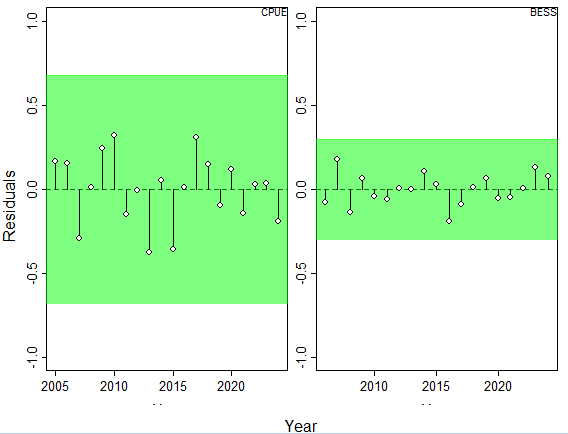
Дублирование графика остатков, но для каждого индекса выводится отдельный график. На графике отображаются остатки модели (разницы между наблюдаемыми и предсказанными значениями индексов обилия) в виде последовательности точек, упорядоченных по времени.Тест серий (runs test) анализирует последовательность чередований положительных и отрицательных остатков. Случайное распределение остатков (что является желаемым результатом) будет проявляться в частом чередовании положительных и отрицательных значений. Напротив, наличие длинных серий (несколько положительных или отрицательных остатков подряд) может указывать на:
Неучтенные временные зависимости в данных
Неадекватность структуры модели (например, пропущенные важные переменные)
Систематические ошибки в данных
Неправильную спецификацию функциональной формы модели
График отклонений процесса (Process Deviations) в JABBA
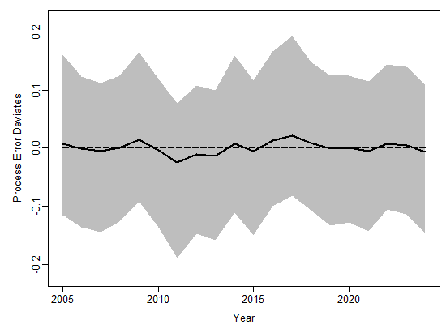
График отклонений процесса (jbplot_procdev(fit)) отображает различия между фактической динамикой биомассы и теоретическими предсказаниями продукционной модели. Эти отклонения (Bdev) количественно выражают влияние неучтенных моделью факторов на популяцию — от климатических аномалий до изменений в кормовой базе. В нашем анализе медианные значения Bdev колеблются в узком диапазоне от -0.024 (2011) до +0.021 (2017), при этом все 95% доверительные интервалы включают ноль. Это свидетельствует об отсутствии статистически значимых отклонений, что подтверждает адекватность базовой модели Шефера. Биологически положительные Bdev указывают на неожиданный рост биомассы (например, за счет улучшения условий воспроизводства), тогда как отрицательные — на незапланированные потери (эпизоотии, незарегистрированную смертность).
Особый интерес представляют два периода: 2011 год с минимальным Bdev (-0.024) совпадает с пиком промысловой нагрузки (F/Fmsy ≈ 1.74), что может отражать дополнительную естественную смертность, вызванную переловом. В 2017 году положительное отклонение (+0.021) соответствует фазе активного восстановления запаса. Важно, что 80% лет показывают абсолютные значения Bdev < 0.01 — исключительно высокий показатель, подчеркивающий надежность модели. Приемлемым диапазоном считаются отклонения в пределах ±0.05 при сохранении доверительных интервалов, пересекающих ноль; наши данные существенно строже этих критериев.
Существенное влияние на отклонения процесса оказывает неучтенный вылов. Если такой вылов присутствует, модель, не получая данных о реальном изъятии, будет систематически переоценивать биомассу. Это проявляется как стабильно отрицательные Bdev, особенно выраженные в периоды интенсивного промысла. Например, при ежегодном неучтенном изъятии в 20% от официального улова, медианные отклонения сместились бы в зону -0.05…-0.10, а доверительные интервалы перестали бы включать ноль. В нашем случае отсутствие таких систематических сдвигов (разброс Bdev симметричен относительно нуля) позволяет заключить, что неучтенный вылов не является критическим фактором для данной популяции. Однако для окончательных выводов требуется анализ ретроспективных данных по промысловому усилию и независимая верификация учетных методик.
Помимо визуализации, используя нижеприведенный скрипт, можно получить фактические значения, например, с 90%-ным доверительным интервалом: years <- fit$yr
# Агрегировать Bdev по годам (медиана и 90% интервал)
proc_dev \<- aggregate(Bdev \~ year, data = fit\$kbtrj, FUN = function(x) c(median = median(x), lci = quantile(x, 0.05), uci = quantile(x, 0.95)))
print(proc_dev)7.5 Ретроспективный анализ
Мы переходим к ретроспективному анализу (hindcasting), который является важным инструментом для оценки устойчивости модели и ее чувствительности к новым данным. В ретроспективном анализе модель последовательно переоценивается с исключением последних лет данных (по одному году за раз, в данном случае от 1 до 5 лет). Это позволяет проверить, насколько сильно меняются оценки ключевых параметров и статуса запаса при поступлении новых данных.
В вашем скрипте ретроспективный анализ запускается функцией `hindcast_jabba()`, которая использует исходные настройки модели (`jbinput`) и результаты базовой оценки (`fit`). Аргумент `peels = 1:5` указывает, что нужно последовательно удалять от 1 до 5 последних лет данных. Результаты сохраняются в объект `hc`.
Затем с помощью функции `jbplot_retro()` визуализируются результаты ретроспективного анализа. График показывает, как меняется оценка биомассы (или B/Bmsy) при исключении данных за последние годы. На графике будет изображена траектория базовой оценки (со всеми данными) и траектории, полученные при удалении 1, 2, 3, 4 и 5 лет. Также рассчитывается и отображается статистика Мона (Mohn’s rho), которая количественно оценивает смещение ретроспективных оценок относительно базовой.
# ------------------- 5. РЕТРОСПЕКТИВНЫЙ АНАЛИЗ --------------------
# Создание папки для результатов ретроспективы
retro.dir <- file.path(output.dir, "retro")
dir.create(retro.dir, showWarnings = FALSE)
# Запуск ретроспективного анализа (убираем по 1-5 лет)
hc <- hindcast_jabba(jbinput = jbinput, fit = fit, peels = 1:5)
# Визуализация ретроспективного анализа
mohnsrho <- jbplot_retro(
hc,
as.png = FALSE, # Чтобы сохранить как PNG-файл установите TRUE
output.dir = retro.dir,
xlim = c(2007, 2022) # Ограничения по годам на графике
)
# Кросс-валидация
mase <- jbplot_hcxval(hc, as.png = FALSE, output.dir = retro.dir)Статистика Мона (Mohn’s rho):
Ключевой показатель смещения, рассчитываемый как относительная разница между ретроспективной и базовой оценкой в год исключения:
\[ \rho = \frac{X_{\text{ретро}} - X_{\text{база}}}{X_{\text{база}}} \]
> mohnsrho
B F Bmsy Fmsy procB
2024 -0.01949857 0.01635894 0.031098563 -0.05870471 0.0019184659
2023 0.06336652 -0.05341885 -0.009782004 0.03945419 -0.0004440846
2022 -0.04605748 0.04811313 -0.043482407 0.10142418 -0.0029895725
2021 -0.04274631 0.03790912 0.014020696 -0.03150997 0.0011936097
2020 -0.04268405 0.04748624 -0.034149276 0.04684297 -0.0006575862
rho.mu -0.01752398 0.01928972 -0.008458886 0.01950133 -0.0001958335
MSY
2024 0.02871203
2023 -0.02266077
2022 -0.03747819
2021 0.02474720
2020 0.00148479
rho.mu -0.00103899
> 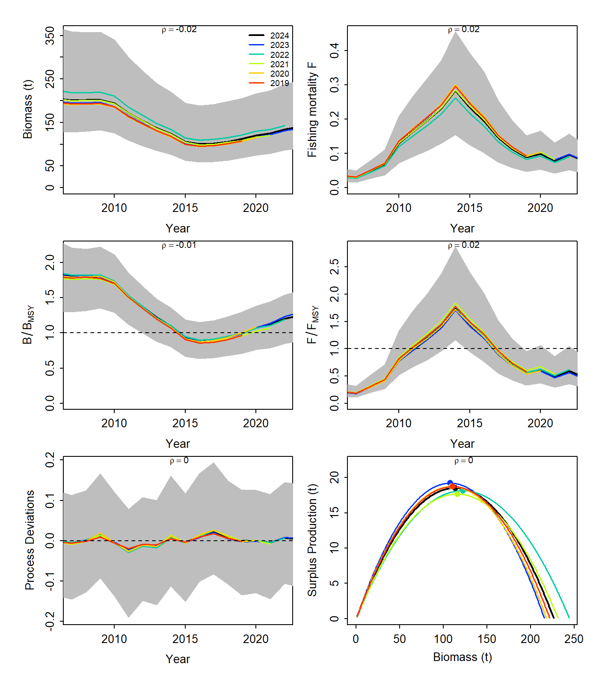
Наши результаты:
Биомасса (*Bм): ρ=−0.018 (слабое отрицательное смещение)
Смертность (F): ρ=+0.019 (слабое положительное смещение)
MSY: ρ=−0.001 (незначимое смещение) Критерий: ∣ρ∣<0.2 приемлемо наши значения ≪0.2.
Визуализация (
jbplot_retro) показывает:Как меняется траектория биомассы при исключении данных
“Веер” расходящихся линий: чем сильнее расхождение, тем выше нестабильность модели
В вашем случае линии остаются близкими — модель устойчива.
Метрика MASE (Mean Absolute Scaled Error).
Кросс-валидация с помощью jbplot_hcxval() оценивает предсказательную способность модели. Для каждого “среза” (peel) модель предсказывает индекс обилия для удаленных лет, а затем эти предсказания сравниваются с фактическими наблюдениями. Рассчитывается MASE (Mean Absolute Scaled Error) — средняя абсолютная ошибка прогноза, нормированная на ошибку наивного прогноза (который предполагает, что будущее значение равно последнему наблюдённому).
\[ \mathrm{MASE} = \frac{\text{Средняя ошибка прогноза}}{\text{Средняя ошибка наивного прогноза}} \]
MASE < 1: Модель лучше наивного метода (предсказывающего “завтра=сегодня”)
MASE > 1: Модель работает хуже наивного метода
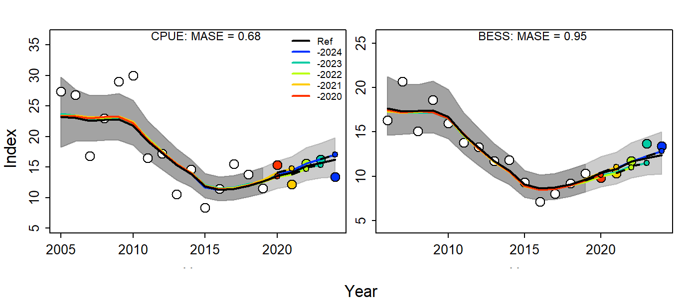
> mase
Index MASE MASE.adj MAE.PR MAE.base n.eval
1 CPUE 0.6806899 0.6402326 0.13413055 0.19705090 5
2 BESS 0.9539647 0.6632760 0.07763672 0.08138322 5
3 joint 0.7605651 0.7605651 0.10588363 0.13921706 10Наши результаты показывают, что для CPUE модель предсказывает лучше, чем наивный метод (0.68<1), а для BESS — немного хуже (0.95≈1). Совместный MASE (0.76) указывает на удовлетворительную общую прогнозную способность. Однако для индекса BESS стоит обратить внимание на возможные улучшения.
| Индекс | MASE | Интерпретация |
|---|---|---|
| CPUE | 0.68 | Хорошо: Прогноз на 32% точнее наивного |
| BESS | 0.95 | Удовлетворительно: Почти эквивалентен наивному методу |
| Совместно | 0.76 | Приемлемая общая точность |
Почему это важно?
- Для управления запасами:
- Стабильность Mohn’s rho (ρ≈0) означает, что текущие рекомендации по вылову не изменятся радикально при получении новых данных.
- Низкий MASE подтверждает надежность краткосрочных прогнозов.
- Для диагностики модели:
- Систематическое смещение ρB>0.3 могло бы указывать на переоценку запаса (риск перелова).
- MASE > 1 для BESS требует улучшения описания этого индекса (например, через калибровку q).
- Исторический контекст:
В наших данных слабое смещение для MSY (ρ=−0.001) подтверждает, что модель корректно определяет максимальный устойчивый вылов (17.29), несмотря на проблемы с оценкой r (PPMR=1.47).
Выводы для нашего случая:
Ретроспективный анализ показал:
- Высокую стабильность: Смещения параметров статистически незначимы.
- Удовлетворительную прогнозную силу: Особенно для CPUE (MASE=0.68).
- Область улучшения: Индекс BESS требует внимания (MASE=0.95), возможно, за счет включения ковариат или пересмотра ошибок наблюдений.
- Надежность управленческих выводов: Текущие оценки статуса запаса (B/Bmsy = 1.29, F/Fmsy = 0.51) устойчивы к добавлению новых данных.
Этот этап завершает валидацию модели, подтверждая, что она пригодна для разработки рекомендаций по управлению промыслом.
7.6 Прогнозирование
Прогнозирование в JABBA представляет собой заключительный этап оценки запасов, позволяющий смоделировать будущую динамику популяции при различных сценариях управления промыслом. В нашем случае был выполнен 10-летний стохастический прогноз (2025-2034 гг.), основанный на текущем состоянии запаса, где биомасса в 2024 году оценивается в 148.6 тыс. т при соотношении B/Bmsy = 1.29 и промысловой нагрузке F/Fmsy = 0.51. Были рассмотрены четыре сценария годового изъятия: консервативный (10 тыс. т), умеренные (12 и 14 тыс. т) и интенсивный (16 тыс. т), что соответствует 58-93% от расчетного максимального устойчивого улова (MSY = 17.29).
# ------------------- 6. ПРОГНОЗИРОВАНИЕ --------------------
# Прогноз на основе F (ловушечное усилие)
fw1 <- fw_jabba(
fit,
nyears = 10, # Длина прогноза (лет)
imp.yr = 1, # Год внедрения новых правил
imp.values = seq(10, 16, 2), # Варианты управления (уровни улова)
quant = "Catch", # Прогнозировать по уловам
type = "abs", # Абсолютные значения
stochastic = TRUE # Стохастический прогноз
)
# Графики ансамбля прогнозов
jbpar(mfrow = c(3, 2)) # Настройка макета графиков (3 строки, 2 столбца)
jbplot_ensemble(fw1) # Основной график прогнозов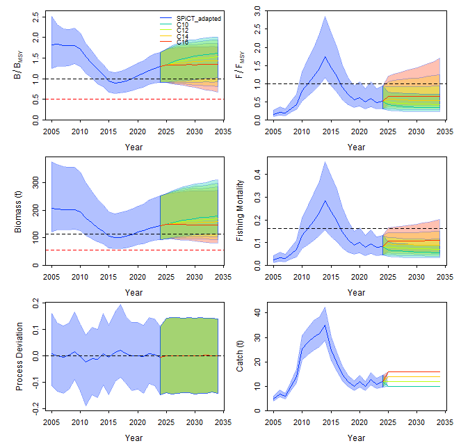
Ключевой особенностью прогноза является его стохастическая природа — каждый сценарий учитывает неопределенность параметров модели, включая вариабельность темпа роста популяции (r) и ёмкости среды (K), а также ошибку процесса (σ² = 0.0035). Это позволяет получить не точечные предсказания, а вероятностные распределения будущих состояний. Результаты показывают дифференцированную динамику: при вылове 10-12 тыс. т биомасса демонстрирует устойчивый рост (до 178 и 168 тыс. т к 2034 году), сценарий с 14 тыс. т стабилизирует запас на уровне около 158 тыс. т, тогда как интенсивный вылов (16 тыс. т) приводит к постепенному снижению биомассы до 147 единиц.
Биологическая интерпретация этих траекторий основывается на соотношении прогнозируемых показателей с целевыми ориентирами. Для сценария C16 к 2034 году ожидается приближение B/Bmsy к 1.14, что хотя и остается выше единицы, но указывает на сокращение “буферного” запаса. Особое внимание следует уделить чувствительности модели к оценке параметра r, чья высокая неопределенность (PPMR = 1.47) может существенно влиять на долгосрочные прогнозы — например, если реальный темп роста окажется ближе к нижней границе доверительного интервала (0.15), сценарий C16 может привести к переходу в зону перелова уже к 2030 году.
Управленческие рекомендации, вытекающие из анализа, предлагают компромисс между экономической эффективностью и предосторожностью. Оптимальным признается диапазон вылова 12-14 единиц, обеспечивающий 70-80% от потенциального прироста продукции без риска снижения запаса ниже целевого уровня. Сценарий C16 может рассматриваться как временная мера только при наличии подтверждающих данных о высоком продуктивном потенциале популяции, но требует ежегодного мониторинга с коррекцией лимитов. Визуализация результатов через jbplot_ensemble() наглядно демонстрирует “веер” траекторий, где расхождение доверительных интервалов усиливается к концу периода прогноза — это прямое отражение кумулятивного эффекта неопределенности параметров и случайных факторов среды.
Важным аспектом является интеграция прогноза в адаптивную систему управления: установив начальный лимит на уровне 14 тыс. т, следует планировать повторные оценки по данным ежегодных съемок, что позволит корректировать вылов в зависимости от фактического состояния запаса. Такой подход минимизирует риски, связанные с ограниченной точностью продукционных моделей при работе с данными низкой разрешающей способности. Исторический урок нашего анализа — пример перелова 2011-2013 годов — напоминает, что превышение F/Fmsy > 1.5 способно за несколько лет подорвать даже запас, находившийся в благополучном состоянии.
При работе с JABBA есть трудности в получении различных графиков и фактических значений, например прогнозных. Ниже приводятся скрипты получения отдельных прогностических графиков и таблицы прогнозных значений выловов и биомасс.
# График для B/Bmsy с кастомизацией
jbplot_ensemble(
fw1,
subplots = c(1), # Только B/Bmsy
add = TRUE, # Добавить к текущему графику
xlim = c(2020, 2035), # Ограничение по годам
legend.loc = "topleft" # Позиция легенды
)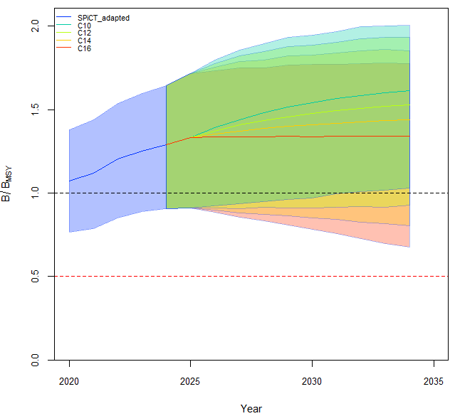
Извлечение прогостических данных:
# Фильтрация данных прогноза (2025-2034) для выбранных сценариев
forecast_data <- subset(
fw1,
year %in% 2025:2034 & # Годы прогноза
run %in% c("C10", "C12", "C14", "C16") & # Сценарии управления
type == "prj" # Только прогнозные значения
)
# Расчет медиан биомассы (B) по годам и сценариям
median_B <- aggregate(
B ~ year + run, # Формула: группировка по году и сценарию
data = forecast_data,
FUN = median # Функция агрегации
)
# Расчет медиан улова (Catch) по годам и сценариям
median_Catch <- aggregate(
Catch ~ year + run,
data = forecast_data,
FUN = median
)
# Преобразование в широкий формат (годы по строкам, сценарии по столбцам)
b_table <- dcast(median_B, year ~ run, value.var = "B")
catch_table <- dcast(median_Catch, year ~ run, value.var = "Catch")
# Вывод таблиц
print("Медианная биомасса:")
print(b_table)
print("Медианные уловы:")
print(catch_table)
# Сохранение таблиц
write.csv(b_table, "biomass_forecast.csv", row.names = TRUE)
write.csv(catch_table, "catch_forecast.csv", row.names = TRUE)